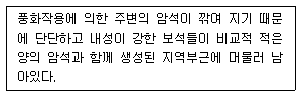
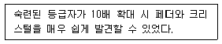
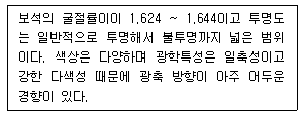
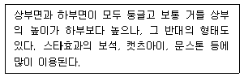

보석감정사(기능사) (2016-01-24 기출문제)
1과목: 보석학일반
1. 최초의 합성 루비를 제조한 합성방법은?
- 열수법
- 플럭스법
- 플레임 퓨전법
- 초크랄스키법
(정답률: 73%)

2. 일부 보석에서 발생하는 독특한 광학현상인 특수효과의 원인이 아닌 것은?
- 내포물의 반사
- 결정구조
- 벽개의 발달상태
- 빛의 선택흡수
(정답률: 79%)
3. 보석의 광택(luster)에 영향을 주는 요소가 아닌 것은?
- 굴절률
- 경도
- 연마상태
- 투명도
(정답률: 45%)
4. 백금조각이 내포물로 발견될 수 있는 합성보석은?
- 합성 자수정
- 합성 루틸
- 합성 다이이몬드
- 합성 에메랄드
(정답률: 71%)
5. 접합석(assembled stone)에 대한 설명으로 틀린 것은?
- 두 개 이상의 분리된 물질들이 접합 매개체에 의해서 하나의 형태로 붙여진 것이다.
- 가장 흔한 접합석의 형태로는 더블릿과 트리플릿이 있다.
- 접합석의 소재로는 천연보석만이 사용된다.
- 보석의 접합여부를 확인하기 위해서 주로 확대검사를 실시한다.
(정답률: 94%)
6. 형광등 조명하에서 진열하기에 가장 효과적이지 않은 보석은?
- 루비
- 블루 사파이어
- 다이아몬드
- 진주
(정답률: 67%)
7. 금(Au)에 대한 설명으로 옳지 않은 것은?
- 화학적으로 모든 금속 중에서 가장 안정된 금속이다.
- 금색광택을 지니며, 색상이 쉽게 변하는 단점이 있다.
- 전연성이 풍부해서 가공성이 우수하다.
- 보통 단독 화학약품에는 용해되지 않으며, 왕수에는 침식된다.
(정답률: 86%)
8. 다음 중 등축정계에 속하는 보석은?
- 스피넬
- 지르콘
- 커린덤
- 페리도트
(정답률: 71%)
9. 다음은 무엇에 관한 설명인가?

- 잔적광산
- 충적광산
- 1차광산
- 화성광산
(정답률: 65%)
10. 정은(sterling silver)의 함량비로 옳은 것은?
- 은 : 구리 = 95% : 5%
- 은 : 구리 = 92.5% : 7.5%
- 은 : 구리 = 90% : 10%
- 은 : 구리 = 82.5% : 17.5%
(정답률: 91%)
11. 피부에 직접 닿으면 변색 될 수 있는 보석은?
- 아콰마린
- 토파즈
- 지르콘
- 진주
(정답률: 88%)
12. 유색효과가 없거나 거의 없는 무색의 투명 또는 아투명한 오팔은?
- 젤리 또는 워터 오팔
- 화이트 오팔
- 블랙 오팔
- 크리스털 오팔
(정답률: 84%)
13. 다음 중 견사광택을 띠는 보석은?
- 사파이어
- 타이거즈 아이
- 헤마타이트
- 문스톤
(정답률: 75%)
14. 진주의 품질을 결정하는 요소가 아닌 것은?
- 형태
- 광택
- 조화
- 강도
(정답률: 80%)
15. 안달루사이트에 대한 설명으로 옳지 않은 것은?
- 화학성분은 Al2SiO5이며, 결정계는 사방정계이다.
- 굴절률이 에메랄드와 동일하다.
- 키아스톨라이트라는 변종이 있다.
- 침상내포물이 있을 수 있다.
(정답률: 71%)
2과목: 다이아몬드감정법
16. 아콰마린과 외견상 가장 비슷한 보석은?
- 소달라이트(블루)
- 토파즈(블루)
- 아이올라이트
- 탄자나이트
(정답률: 78%)
17. 발색원소가 구리인 보석은?
- 크리소콜라
- 로도크로사이트
- 로도나이트
- 알만다이트 가닛
(정답률: 58%)
18. 열개(Parting)가 쉽게 생기는 대표적인 보석은?
- 오팔
- 에메랄드
- 스포듀민
- 다이아몬드
(정답률: 53%)
19. 다음 설명에 해당하는 클래리티 등급은?

- IF
- VVS1
- VS1
- SI2
(정답률: 83%)
20. 마스터 스톤으로 사용할 수 있는 다이아몬드의 최소 중량은?
- 0.10 캐럿
- 0.15 캐럿
- 0.20 캐럿
- 0.25 캐럿
(정답률: 80%)
21. 표준 라운드 브릴리언트형의 다이아몬드 직경이 5.30×5.40mm, 전체 깊이가 3.2mm 일 때 추정 중량은? (단, 거들의 두께에 따른 중량 조정은 무시한다.
- 0.52ct
- 0.56ct
- 0.60ct
- 0.64ct
(정답률: 64%)
22. 다음 중 클래리티의 등급에 영향을 가장 많이 미치는 것은?
- 엑스트라 페싯
- 스크래치
- 핀 포인트
- 어브레이전
(정답률: 77%)
23. 다이아몬드를 팬시 형태(Fancy shape)로 커팅하는 가장 중요한 이유는?
- 화려한 외관을 만들기 위해
- 팬시 컷의 가치가 높으므로
- 최대 중량을 보유하기 위해
- 유행을 따라서
(정답률: 88%)
24. 목측에 의한 다이아몬드의 퍼빌리언 깊이의 퍼센트 추정에서 퍼빌리언 깊이 43%에 대한 설명으로 맞는 것은?
- 테이블 반사상이 큐릿에서 테이블 코너까지 거리의 1/3에서 1/2 사이
- 테이블 반사상이 큐릿에서 테이블 코너까지 거리의 1/2에서 2/3 사이
- 테이블 반사상이 큐릿에서 테이블 코너까지 거리의 1/3
- 테이블 반사상이 큐릿에서 테이블 코너까지 거리의 3/4
(정답률: 57%)
25. 패싯과 패싯 또는 퍼빌리언 메인 패싯과 거들이 만나는 지점의 모서리가 불규칙하게 만나게 되어 뭉툭하게 열려 있는 상태가 되는 경우에 사용하는 대칭 요소는?
- Fac
- EF
- T/oct
- Ptg
(정답률: 62%)
26. 다이아몬드의 컬러 등급 구분에 사용되는 기구가 아닌 것은?
- 다이아몬드 라이트
- 헤드 루페
- 오버헤드 라이트
- 자외선 형광램프
(정답률: 69%)
27. 강바닥 근처에서 채취된 다이아몬드는 대부분 색을 띠 지 않고 하천으로 흘러 내려오면서 표면이 매끄럽게 마모가 되는데 이런 높은 품질의 형광성이 없는 무색의 다이아몬드를 일컫는 옛 업계 용어는?
- 예거
- 리버
- 웨셀톤
- 케이프
(정답률: 80%)
28. 다이아몬드의 유사석인 이트륨 알루미늄 가넷(Y.A.G.)의 비중으로 가장 알맞은 것은?
- 5.60
- 4.60
- 3.90
- 2.30
(정답률: 54%)
29. 다이아몬드의 가치평가 요소인 4C 중 파이어(Fire)나 신틸레이션(Scintillation)과 가장 관련이 깊은 것은?
- 캐럿 중량
- 클래리티
- 컬러
- 커트
(정답률: 71%)
30. 다이아몬드를 연마하는 과정 중 브루팅 작업 시 연마의 부주의로 발생한 수염상의 페더로 정의되는 것은?
- 노트
- 인덴티드 내추럴
- 브루즈
- 비어디드 거들
(정답률: 76%)
3과목: 보석감별법
31. 다이아몬드의 블래미시(blemish)를 작도할 때 주로 사용하는 표시색은?
- 자색
- 적색
- 황색
- 녹색
(정답률: 79%)
32. 표준 색 범위의 다이아몬드에서 색의 깊이를 판단할 때 가장 고려해야 할 것은?
- 색상과 명도
- 명도와 채도
- 색상과 채도
- 색상과 색조
(정답률: 80%)
33. 다이아몬드의 색 등급에서 최상의 색 등급은?
- A
- D
- X
- Z
(정답률: 91%)
34. 크리소베릴에서 관찰할 수 있는 전형적인 특수효과는?
- 샤토얀시
- 아스테리즘
- 이리데센스
- 유색효과
(정답률: 60%)
35. 첼시컬러필터를 사용한 검사에 대한 내용 중 틀린 것은?
- 첼시컬러필터는 분리된 2개의 필터로 구성되어 있다.
- 투명한 보석만 검사할 수 있다.
- 강한 백색광원을 사용하는 것이 좋다.
- 대부분의 보석 감별에 결정적인 증거를 제공하지 못한다.
(정답률: 63%)
36. 물과 염산의 비율이 10:1 보다 진하지 않은 희석 용액을 보석 표면에 떨어트렸을 때 발포반응을 보이지 않는 보석은?
- 로도나이트
- 방해석
- 로도크로사이트
- 공작석
(정답률: 45%)
37. 분광기를 사용해서 흡수 스펙트럼을 관찰하였을 때 나타나지 않는 흡수 패턴의 종류는?
- 성장선
- 컷 오프
- 밴드
- 라인
(정답률: 85%)
38. 정수법을 이용한 비중 측정시 유의사항으로 옳지 않은 것은?
- 정수법은 나석만 가능하고 세팅된 보석의 비중은 구할 수 없다.
- 보석이 가벼울수록 보다 정확한 비중을 구할 수 있다.
- 다공질 보석인 경우 비중의 오차가 심할 수 있다.
- 사용하는 물은 4°C의 수가 이상적이다.
(정답률: 80%)
39. 다음 설명에 해당하는 보석은?

- 탄자나이트
- 투어멀린
- 페리도트
- 안달루사이트
(정답률: 45%)
40. 조흔검사에 관한 설명으로 틀린 것은?
- 조흔판에 보석을 그었을 때 나타나는 분말색으로 보석 종류 등을 알아내는 방법이다.
- 파괴검사이므로 보석 감별에는 별로 사용하지 않으며 원석 광물 표본을 검사하는데 적합하다.
- 경도 8 이하의 보석을 대상으로 한다.
- 헤마타이트의 조흔색은 적색이다.
(정답률: 74%)
41. 열 반응 검사의 용도가 아닌 것은?
- 플라질 보석의 여부의 검사
- 탄산염 포함 여부의 검사
- 왁스 처리 여부의 검사
- 일부 유기질 보석의 독특한 냄새에 따른 감별
(정답률: 59%)
42. 자외선 장·단파에서 확연히 서로 다른 색으로 반응할 수 있는 보석은?
- 합성 루비
- 합성 에메랄드
- 합성 자수정
- 합성 청색 스피넬
(정답률: 64%)
43. 분광기의 검사방법 중 내부 반사법에 대한 설명으로 옳지 않은 것은?
- 비교적 큰 불투명한 보석에 적합한 방법이다.
- 빛이 보석의 내부 표면에 반사되도록 하여 관찰하는 방법이다.
- 반사광의 방향으로 분광기를 향한다.
- 보석의 테이블을 아래로 향하게 하여 조리개 위에 놓는다.
(정답률: 66%)
44. 단구(fracture)의 종류 중 깨진 면이 설탕의 입자나 흙과 유사한 상태로 결정질 집합체에서 흔히 볼 수 있는 미립자 상태를 나타내는 것은?
- 패각상
- 목쇄상
- 입상
- 불균일상
(정답률: 72%)
45. 복굴절 보석의 높은 굴절률(최대굴절률)의 수치가 1.66이고 낮은 굴절률(최저굴절률)의 수치가 1.48인 보석의 복굴절률은?
- 3.14
- 1.57
- 0.18
- 0.09
(정답률: 67%)
4과목: 보석가공기법
46. 편광기를 사용한 광학검사 방법에 대한 설명으로 옳지 않은 것은?
- 편광기의 전원을 켜고 애널라이저를 교차된 위치로 돌려 완전히 어두운 위치(dark position)인지 확인한다.
- 젬크로스로 보석을 깨끗이 닦는다.
- 폴라라이저 위에 보석을 놓거나 손가락으로 보석을 잡아 폴라라이저와 애널라이저 사이에 위치시킨다.
- 보석을 좌우방향으로 각각 180° 회전시키면서 애널라이저를 통해 보석을 관찰한다.
(정답률: 67%)
47. 보석감별용 형광성 검사에 이용되는 자외선 파장의 일반적인 범위는?
- 100 ~200nm
- 200 ~380nm
- 380 ~600nm
- 600 ~700nm
(정답률: 68%)
48. 컬러 밴딩과 컬러 조닝의 관찰에 가장 적합한 조명법은?
- 명시아 조명
- 암시아 조명
- 두상 조명
- 확산 조명
(정답률: 67%)
49. 미지의 보석을 2.62 비중액에 넣었더니 서서히 가라앉았고, 2.67 비중액에 넣었더니 빠르게 떠올랐다. 이 현상으로 알 수 있는 것은?
- 미지의 보석 비중은 2.62 이다.
- 미지의 보석 비중은 2.67 이다.
- 미지의 보석 비중은 2.63에 가깝다.
- 미지의 보석 비중은 2.66에 가깝다.
(정답률: 83%)
50. 이색경 내부에 사용되고 있는 물질은?
- 백수정(rock crystal)
- 무색 사파이어(white sapphire)
- 큐빅 지르코니아(cubic zirconia)
- 방해석(calcite)
(정답률: 60%)
51. 합성 루비와 천연 루비의 감별 검사 중 합성의 증거가 되는 내포물이 아닌 것은?
- 기포
- 육각형 또는 삼각형의 금속판
- 교차하는 침상
- 커브선
(정답률: 58%)
52. 보석의 연마 형채 중 인위적인 연마를 통해서 일정한 형태를 만들지 않고 원석의 형태 그대로 표면만 매끈하게 광택을 낸 것은?
- 인탈리오
- 바게트
- 카메오
- 덤블드
(정답률: 75%)
53. 난발 난물림의 특징에 대한 설명으로 틀린 것은?
- 불투명한 보석의 경우 빛의 반사효과가 난다.
- 고급 보석이나, 섬세한 디자인에 주로 사용된다.
- 어떤 형태의 보석이라도 물릴 수 있다.
- 난발 그 자체로 장식적인 효과가 있다.
(정답률: 72%)
54. 연주형 목걸이처럼 여러 개의 부품들이 연결되어 늘어뜨리지 않고 전체의 형태가 하나로 고정되어 있는 목걸이의 명칭은?
- 네크피스(neckpiece)
- 쵸커(chocker)
- 팬던트(pendant)
- 펙터럴(pectoral)
(정답률: 74%)
55. 다음에서 설명하는 캐보션의 형태는?

- 단순 캐보션
- 이중 캐보션
- 오목 캐보션
- 평 캐보션
(정답률: 68%)
56. 보석을 연마할 때 최대의 광택을 얻기 위하여 반드시 고려해야 하는 사항이 아닌 것은?
- 각
- 비율
- 색상
- 위치
(정답률: 69%)
57. 네프라이트를 원자재로 하는 가락지 연마 순서로 맞는 것은?
- 절단 - 천공 - 그라인딩 - 샌딩 - 광택작업
- 절단 - 그라인딩 - 샌딩 - 천공 - 광택작업
- 절단 - 샌딩 - 그라인딩 - 천공 - 광택작업
- 절단 - 그라인딩 - 천공 - 샌딩 - 광택작업
(정답률: 74%)
58. 주로 경도가 높은 보석을 샌딩하는데 사용하는 샌더는?
- 벨트 샌더
- 드럼 샌더
- 가죽 샌더
- 나무 샌더
(정답률: 59%)
59. 표준 라운드 브릴리언트 컷 크라운 면의 수는?
- 16면
- 25면
- 33면
- 38면
(정답률: 70%)
60. 구형 구슬형태의 보석을 천공할 때 가장 적합한 기구는?
- 바이스(Vise)
- 지그(Jig)
- 핸드피스(Handpiece)
- 환옥기(Sphere machine)
(정답률: 73%)